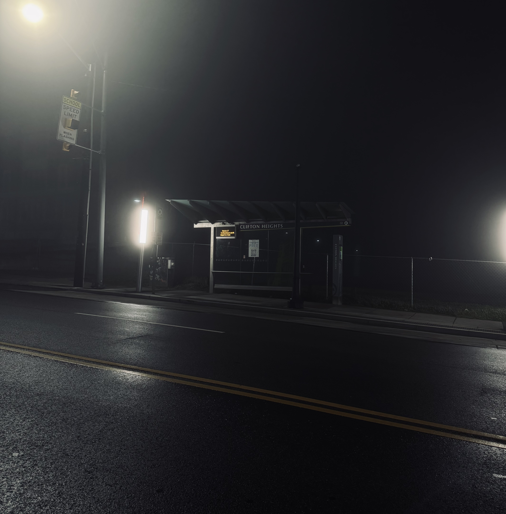

Pursuing my B.S. in Electrical Engineering at the University of Cincinnati. I work on computational imaging, signal processing, and optical systems resolving inverse prooblem.
News
- Apr 2026 — Started research assistant position in computational imaging lab.
- Mar 2026 — Won RevolutionUC Hackathon.
- Jan 2026 — Began co-op rotation in signal processing and systems.
Research
See all research →
Art
See all art →

Photography
See all photos →